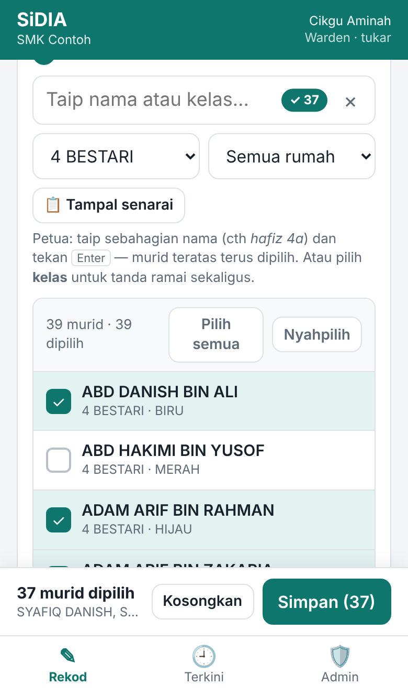
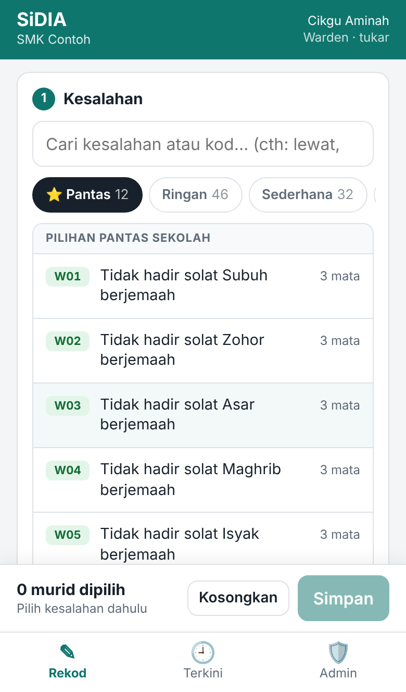
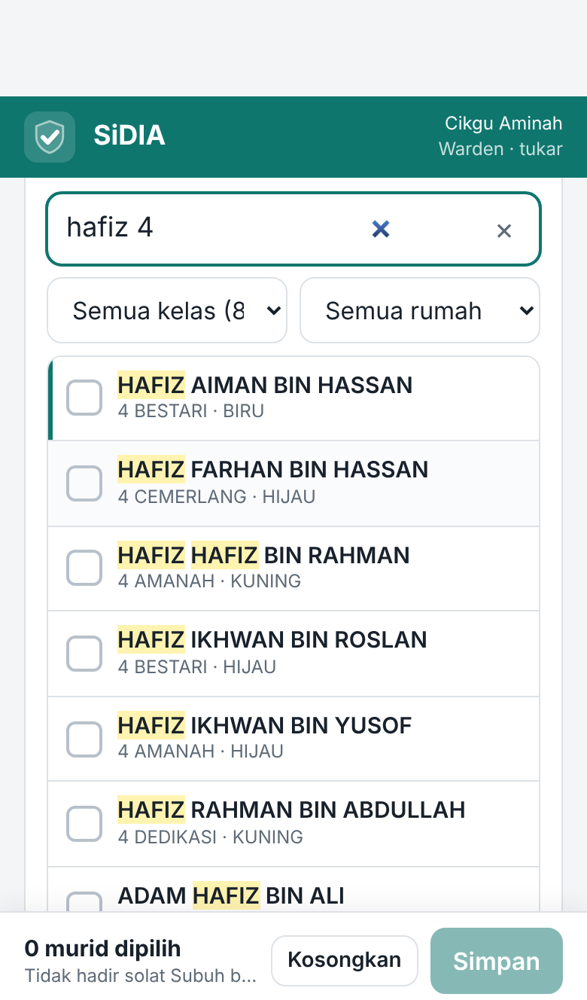
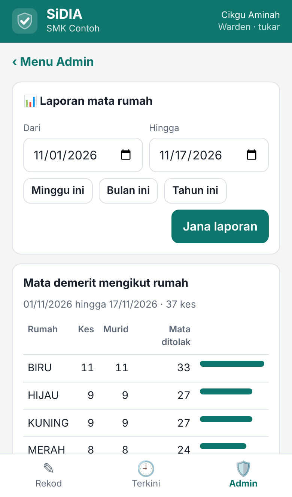
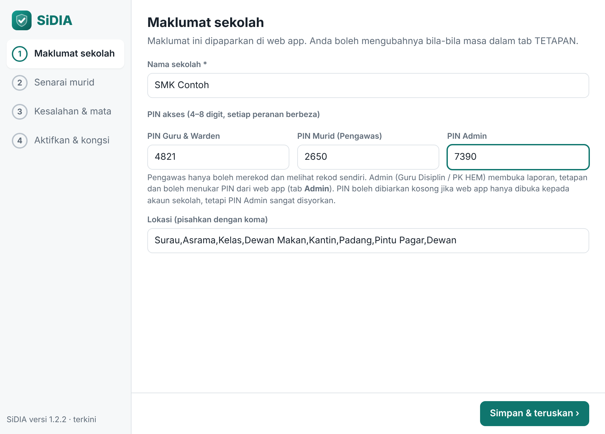
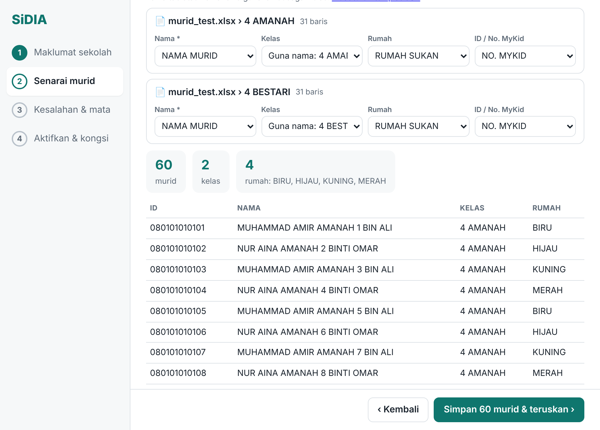
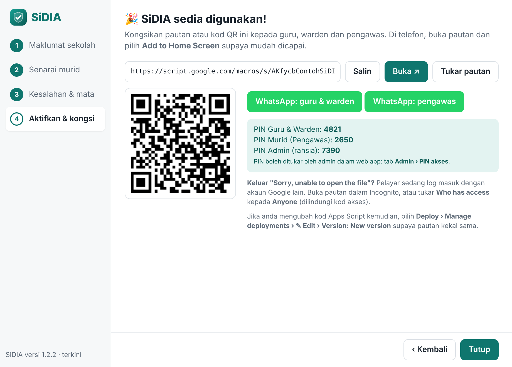

SiDIA membantu warden, guru dan pengawas merekod kesalahan disiplin murid terus dari telefon, termasuk ketika ramai murid tidak hadir solat berjemaah, dan mengira mata rumah secara automatik.

Merekod satu murid memang mudah. Yang sukar ialah merekod ramai murid serentak, oleh beberapa orang bertugas, tanpa rekod berulang, dan kemudian mengira mata setiap rumah.
Pilih kesalahan sekali sahaja, kemudian pilih murid dengan cara yang paling sesuai untuk situasi itu.
Taip hafiz 4a dan tekan Enter. Murid teratas terus dipilih dan kotak carian dikosongkan untuk nama seterusnya.
Pilih kelas, tekan Pilih semua, kemudian buang tanda murid yang hadir. Sesuai untuk semakan solat, prep dan perhimpunan.
Ada senarai nama dalam WhatsApp atau Excel? Tampal sahaja. SiDIA memadankan nama secara automatik dan bertanya jika ada nama yang sama.
rokok, ponteng atau R16, kemudian tekan Enter.


Tiada pemasangan perisian. Anda hanya perlukan akaun Google sekolah (DELIMa) dan fail Excel senarai murid.
Klik butang di bawah. Google akan bertanya "Make a copy?", klik Make a copy. Satu Google Sheet SiDIA akan dicipta dalam Google Drive anda.
30 saat
Dalam Google Sheet, klik menu SiDIA › 🚀 Mula di sini. Wizard akan membantu anda:
• isi nama sekolah dan tiga PIN (Guru & Warden, Pengawas, Admin)
• muat naik fail Excel/CSV senarai murid. Satu fail, satu tab setiap kelas, atau satu fail setiap kelas semuanya boleh.
• semak 142 kesalahan standard, atau tampal senarai kesalahan sekolah anda dari Excel

Ikut arahan dalam wizard untuk klik Deploy › Web app (sekali sahaja). Selepas itu anda akan mendapat pautan dan kod QR untuk dikongsi kepada guru, warden dan pengawas melalui WhatsApp.
1 minit
Langkah demi langkah dengan tangkapan skrin. Cetak atau kongsikan dalam kumpulan WhatsApp guru, warden dan pengawas.
Log masuk, pilih kesalahan, tiga cara pilih murid, simpan & semak.
Muat turun PDF ↓Semakan solat berjemaah & asrama: pilih kelas, buang yang hadir.
Muat turun PDF ↓Amanah pengawas, tugasan di pintu pagar, semak rekod sendiri.
Muat turun PDF ↓Persediaan, PIN, laporan mata rumah, kongsi pautan, kemas kini.
Muat turun PDF ↓Ya, sepenuhnya. SiDIA menggunakan Google Sheet dan Google Apps Script yang sudah tersedia dalam akaun Google sekolah. Kodnya juga sumber terbuka (lesen MIT).
Semua data (senarai murid dan rekod) disimpan dalam Google Sheet di Google Drive anda sendiri. Pembangun SiDIA tidak boleh melihat data sekolah anda. Pengguna web app hanya boleh merekod dan melihat rekod terkini, dan tidak boleh membuka Google Sheet itu.
Boleh. Semasa Deploy, pilih Who has access: Anyone dan tetapkan PIN Murid (Pengawas) dalam wizard. Pengawas hanya boleh merekod dan melihat rekod sendiri, tanpa laporan.
Pelayar anda log masuk dengan beberapa akaun Google, dan akaun lalai bukan akaun sekolah yang dibenarkan. Penyelesaian:
/a/nama-domain daripada pautan, cth https://script.google.com/macros/s/…/execHampir apa-apa fail Excel (.xlsx/.xls), CSV atau Google Sheet. Wizard mengenal pasti lajur Nama, Kelas, Rumah / Rumah Sukan dan No. MyKid / No. KP secara automatik, walaupun ada baris judul di atas. Jika setiap kelas berada dalam tab atau fail berasingan, nama tab atau fail itu digunakan sebagai kelas.
Boleh. SiDIA disertakan dengan 137 kesalahan standard (Ringan / Sederhana / Berat). Dalam wizard (langkah 3), anda boleh mengubah mata, menyahaktifkan kesalahan, menandakan ⭐ Pantas, atau menampal terus jadual kesalahan sekolah anda dari Excel (lajur Kod, Kesalahan, Kategori 1/2/3 dan Mata).
Setiap kesalahan mempunyai nilai mata demerit (boleh diubah). Laporan menjumlahkan mata bagi semua kesalahan murid dalam setiap rumah untuk tempoh yang dipilih. Muat turun CSV untuk digabungkan dengan markah rumah sukan atau kokurikulum.
SiDIA tidak menyimpan rekod kedua bagi murid yang sama, kesalahan yang sama dan tarikh yang sama. Pengawas akan diberitahu nama murid yang sudah direkod.
Boleh. Senarai kesalahan (solat, asrama, kehadiran, kekemasan dan lain-lain) hanyalah cadangan. Padam atau tambah kesalahan dalam wizard mengikut keperluan sekolah anda.
Klik menu SiDIA › ⬆️ Semak kemas kini dalam Google Sheet anda. SiDIA memaparkan apa yang baharu, kemudian mengemas kini dirinya sendiri. Pautan web app kekal sama dan data tidak diubah. Sebelum kali pertama, hidupkan suis Google Apps Script API di script.google.com/home/usersettings.
Sila buka isu di GitHub.
Sediakan SiDIA untuk sekolah anda dalam masa kira-kira 10 minit.